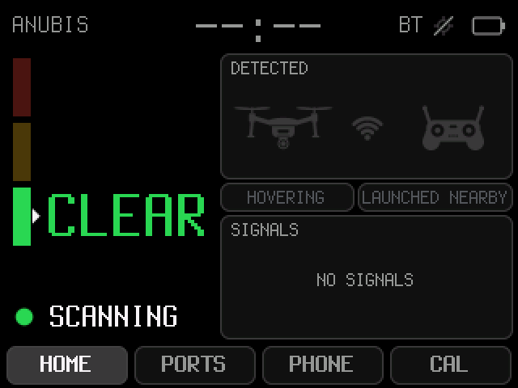
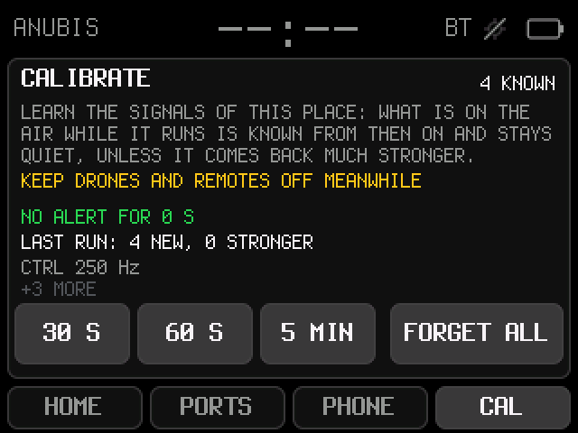
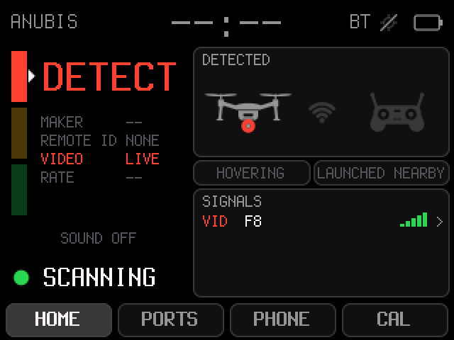

This guide applies to master firmware 0.12.0, which is the Beta release on the firmware page. The Beta has a landscape screen. The Alpha release has a portrait screen, so its screens differ from the ones shown here. Commands that start with python3 tools/ need the project's tools, which aren't publicly available.
Quickstart
From a finished unit in the hand to its first alert. It takes about ten minutes, and most of them go to one calibration and to trying your own aircraft.
- Describes master firmware 0.12.0 with the landscape screen, as the user guide does
- A statement here is read from the firmware unless it says measured or estimated. The user guide explains those words
The unit is taken to be built and flashed. Building it is the wiring guide.
Before you switch on
| Check | Why |
|---|---|
| All three antennas are fitted | A sensor without its antenna looks alive and hears almost nothing (read: wiring guide) |
| The cell is plugged in, or a USB supply of 2 A or more is in the master's own socket | Either runs the whole unit. A sensor's USB socket alone does not |
| A TF card is in the slot, if you want a log | FAT32, 32 GB or smaller. Put it in now: a card put in while the master runs has not been tried |
| Your own aircraft, remote control and video goggles are switched off | Step 5 learns what is on the air |
| The antennas are as high and as free as you can carry them | A unit held up hears further than one in a bag (estimated) |
1. Switch on
Hold the master's power button for about 1 s.
- You hear four rising notes.
- You see the Home screen: a bar at the top, the level at the left, three pictures and a list at the right, four buttons at the foot.

2. Read the light at the lower left
| You see | It means | Do |
|---|---|---|
| SCANNING with a green dot | Both sensors are linked and listening | Go on |
| SCANNING in yellow with a warning sign | One sensor is still starting, or does not answer | Wait a few seconds. If it stays, press PORTS and see When something is wrong |
| NO RADIO in red | Neither sensor answers | The same page |
Press PORTS for the detail: each port should read UP in green, with RADIO RUNNING and SETTINGS OK under it. Press HOME to come back.
The picture of a cell at the top right is the charge. BT beside it is grey until a phone connects.
3. Read the level
It should read CLEAR in green, with the three pictures unlit and NO SIGNALS in the list.
If it reads NOTICE, DETECT or CONFIRMED, something is on the air already. The rows at the right say what. That is common indoors, and step 5 is for it. A tap on the left side stops the sound meanwhile.
4. Pair your phone
Skip this if you have no phone with the app. The unit works without one; only its clock stays unset.
- Press PHONE at the foot of the master's screen. Note the name it shows, as in
UAS Master-1A2B. - In the app, find the master and choose that name.
- The master shows PAIRING REQUEST. Press ALLOW.
- The master shows six digits. Type them on the phone promptly: Android ends a pairing about half a minute after it began (measured, 14 Nov 2026: master). If it ran out, choose the master in the app again. ALLOW keeps pairing open for 120 s.
- You see
BTturn blue. - The top bar now shows the time. The master took it from the phone, so the phone's own clock should be right.
5. Calibrate the place
A calibration learns the signals that belong to this place, so that they stay quiet from now on. Do it on arrival at every new place.
- Make sure once more that your own aircraft, remote control and video transmitter are off.
- Press CAL, then 60 S. If the unit was last used somewhere else, press FORGET ALL first.
- You see CALIBRATING, the seconds counting down, and "2 SIGNALS LEARNED SO FAR" with a line for each.
- When the time is up, the screen says "LAST RUN: 2 NEW, 0 STRONGER" and lists what is known.

Read the list. Every line is a signal that will raise no alert here unless it comes back more than 10 dB stronger. If a line is something of your own that you forgot to switch off, press FORGET ALL, switch it off and calibrate again.
- A place with nothing on the air gives "LAST RUN: 0 NEW, 0 STRONGER". That is a good result.
- A yellow line "1 AIRCRAFT SIGNAL: NOT LEARNED" means an aircraft was broadcasting its identity meanwhile. The unit never learns that, and goes on alerting for it.
- The green line "NO ALERT FOR ..." counts how long the unit has been quiet since. Watch it for a minute or two.
6. Leave the sensitivity as it is
A new unit is at medium for all three kinds of sensor, Try the unit at that level first. Sensitivity says what low and high change.
7. Try it with your own aircraft
Press HOME. Switch on your remote control a few metres from the unit, then the aircraft or its video transmitter.
| What you switched on | What to expect |
|---|---|
| An ExpressLRS remote control on 2.4 GHz | DETECT in red. The controller's picture turns red; the aircraft stays unlit. A row with a red CTRL tag and the packet rate as its name. Three quick beeps, then single beeps |
| An analog video transmitter on 5.8 GHz | DETECT. The aircraft's picture is grey with its camera in red. A row with a VID tag and the FPV channel as its name |
| Both | CONFIRMED, the red step blinking, aircraft and controller both red, and the sound becomes a warble |
| An aircraft that broadcasts Remote ID | DETECT, the whole aircraft red, and a row with a RID tag and the aircraft's ID as its name |
| An aircraft flown from a phone over Wi-Fi | DETECT, the aircraft and the Wi-Fi sign red, and a row with a WAIR tag and its network's name, if that name is one the unit knows |



Measured on benches on 14 and 15 Nov 2026: analog video was listed 3 to 5 s after it came on, a control link from a real remote control within a second or two, and a Remote ID broadcast within 0.4 to 8 s depending on how it is sent.
Then try three things:
- Tap the left side. The sound stops, and it reads SOUND OFF.
- Tap a row. Its own screen says what the signal is, shows the level in figures and has the buttons that mute it.
- Switch everything off again. The video row goes after about 10 s, the control row after 11 to 14 s (estimated: user guide), a Remote ID row after 30 s. The level returns to CLEAR.
If nothing was listed, your aircraft may use a kind of link the unit does not hear. What it can and cannot detect today lists them. Also look at the list: a signal that a calibration learned shows as a grey row that says KNOWN and stays silent.
8. Switch off
Hold the power button for about 2 s. The screen goes dark.
Then unplug the cell, unless you will use the unit again soon. The button switches the master only. The two sensors stay powered from the cell, and their sleep while the master is off has not been tested on either sensor. Two sensors that never sleep empty a 1000 mAh cell in hours to a day (estimated: wiring guide).
Next
- What every screen, colour and sound means: the user guide.
- One task at a time, such as muting a signal, recording a walk or preparing for a test day: the how-to pages.